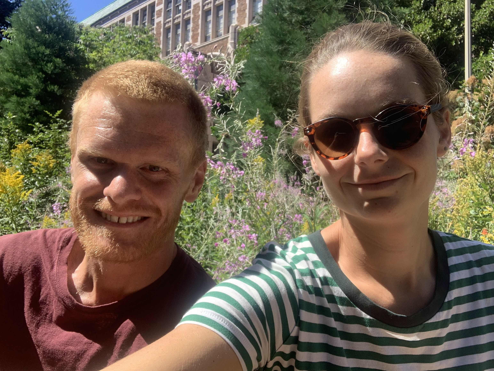

{Back to Home}
Schedule of Events
Visiting UW
Ceremony & Reception
- Plan to arrive at Fielder Farm by 3PM
- The short ceremony will begin around 3:30PM
- There will be snacks, drinks, and lawn games until dinner is served around 5:30PM
- There will be dancing and dessert into the evening